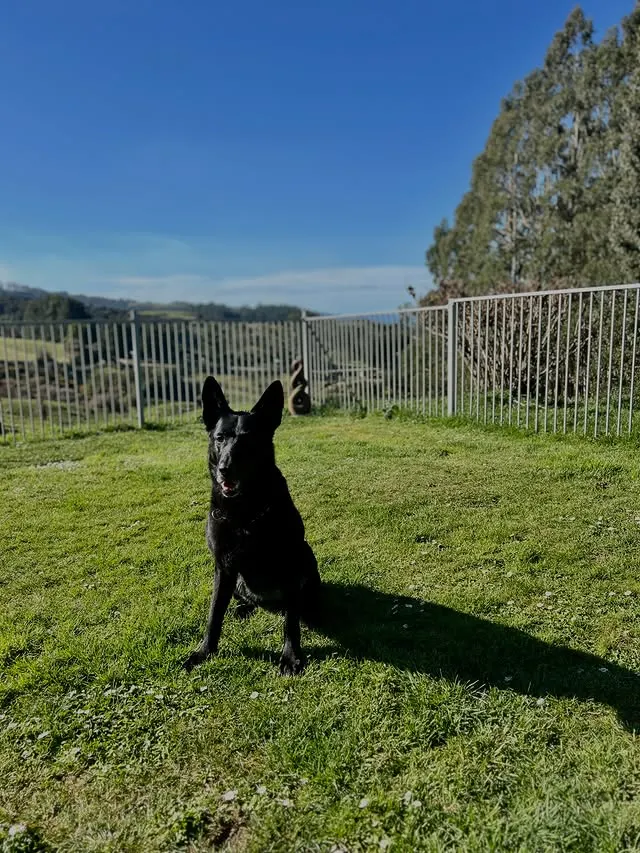

Pet friendlyLog fire
Kererū Cottage
- Cosy self-contained cottage with a log fire to come home to
- A favourite with four-legged guests — Eywa, Solo, Louis and Tato have all stayed here
- Multi-day discount: book 7 nights and save 20%
- Perfect base for exploring the farm’s forest trails